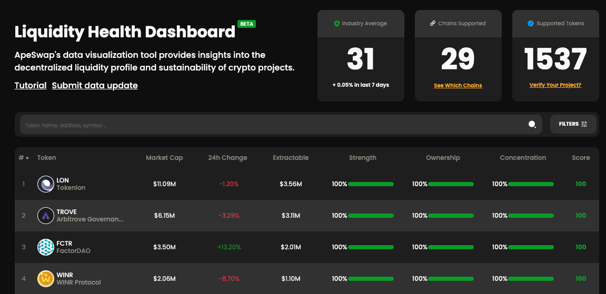
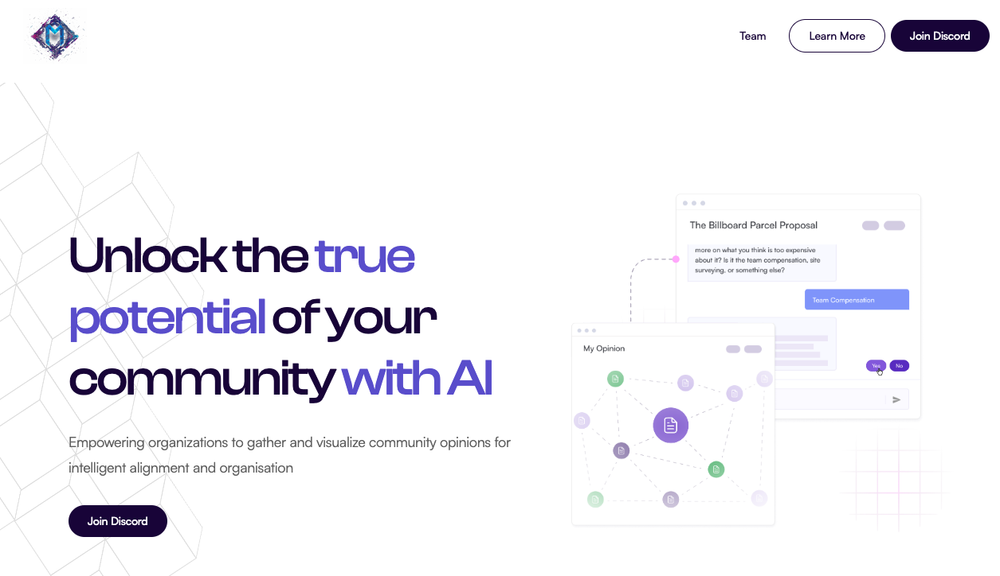
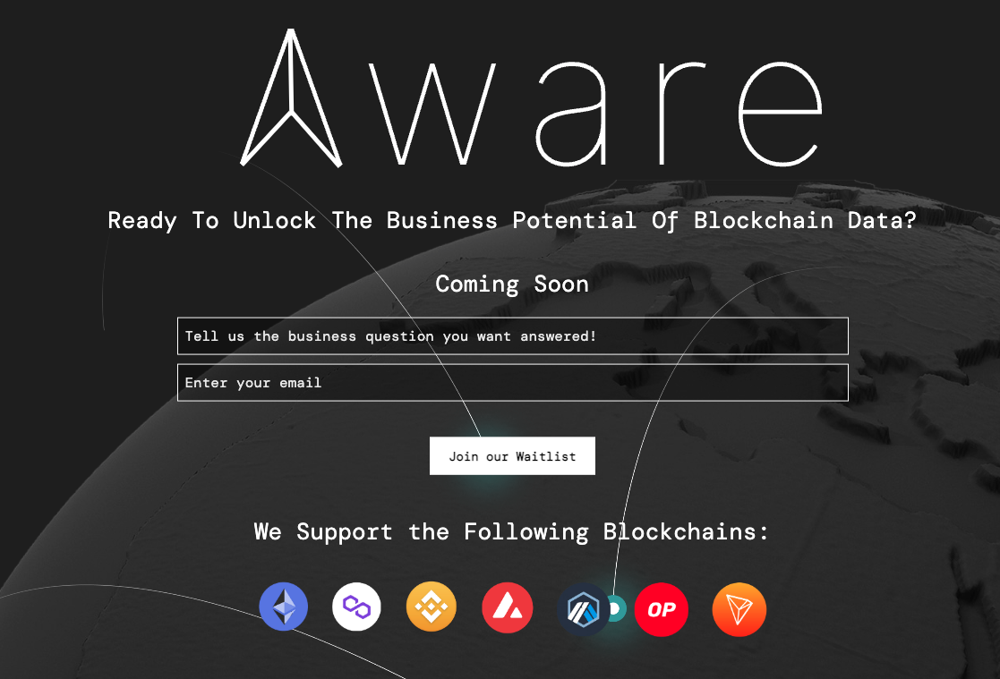
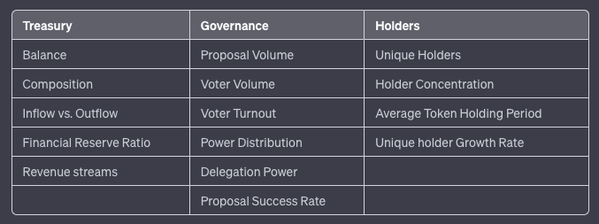
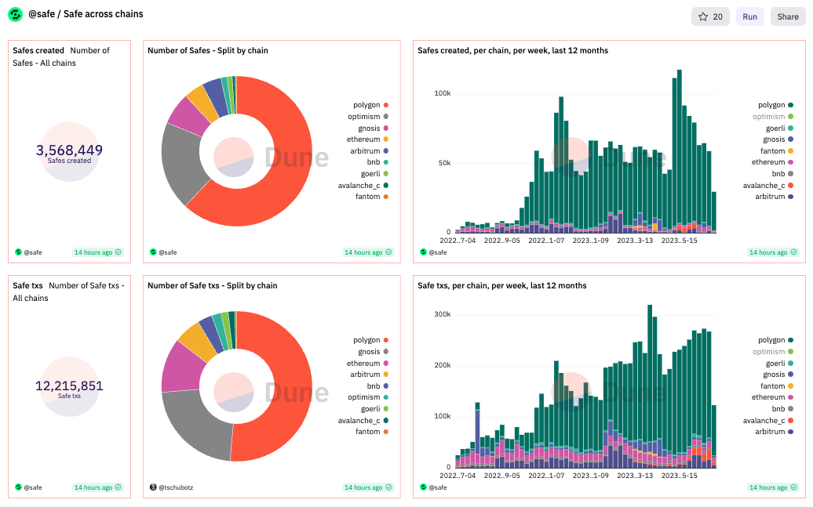
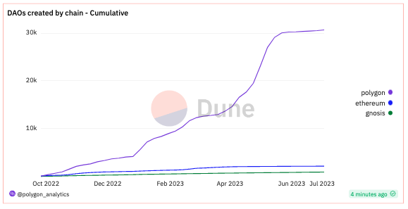
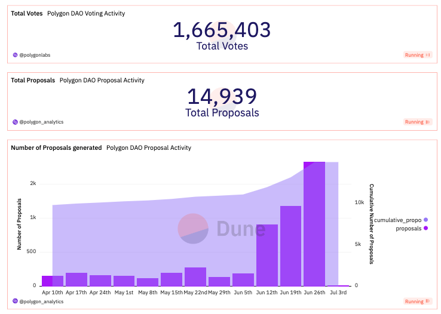

DAO Data
Originally published at https://paragraph.com/@0xjustice/dao-data
One of the big promises of DAOs is data transparency - the idea that every person, every decision, and every resource could be crystal clear on an open programmable ledger. This level of visibility is the dream, but what's the reality?
This grand vision has yet to materialize fully. Data is public but needs to be legible; we need evaluation frameworks, ecosystem health scores still need to be explored, and DAO designers need to promote improved approaches. How do we close the gap?
Polygon announced an awareness campaign on DAO data at the end of June. We invited everyone with ideas, insights, or products that could advance the vision of DAO data transparency to reveal and circulate their ideas. The response was awesome. This post is a synopsis and recap of all the responses.
Product Announcements
Moneyball revolutionized baseball by analyzing objective, in-game data. We need a mindset shift and tools to do the same. Several projects announced the following new tools and products to advance this vision.
Liquidity Health Dashboard (Treasury Data)
The team at ApeSwap has the deepest finance and treasury management insight of anyone in the space. They are creating solutions that will define the next generation of Defi. A part of this offering is something called the Liquidity Health Dashboard (LHD).

ApeSwap's data visualization tool provides insights into crypto projects' decentralized liquidity profile and sustainability. It gives each DAO treasury a score based on its diversification and several other factors, along with suggestions for improving that score.
Missio (Proposal Data)
Proposals are a core primitive to DAOs, so enhancing our ability to read and write them would be an immeasurable contribution to the space. Missio is doing that very thing by bringing AI into the mix.
Missio enables proposal summaries, conversational proposal interaction, intelligent surveying, reputation analysis, and opinion clustering, and they are just getting started.

Gone will be the signal in DAO governance. Map, quantify, and act on the collective mindset of a community. Reveal opinion patterns and foster informed decisions. Learn more at missio.ai.
Aware Labs (Ecosystem Data)
Natalie Lubelchick and Royee Guy bring a unique blend of academic brilliance and industry expertise with years of AI research and fintech experience. They recognized the challenge of complex data, fragmented sources, and lack of contextualization that hinder AI from analyzing blockchain data, thus limiting business analytics capabilities.

They have built a specialized knowledge graph that seamlessly aggregates, standardizes, and contextualizes data to address these challenges. Aware is a generative AI terminal empowering users with data expert-level abilities to provide personalized and accurate answers about the blockchain ecosystem. You can watch a video demonstrating its capabilities here.
With Aware, users can explore deep analytics without extensive technical expertise. Sign up for the waitlist at awarelabs.xyz
Publications
Data is necessary, but so are interpretive frameworks. We must leverage the current data before believing we’ll benefit from more. These are some of the voices that weighed in on how to interpret this data and new data we might obtain.
Sea Launch
In Web3 analysis, Sealauch is a Gandalf-level wizard, but don’t take my word for it. See for yourself by looking at their almost 50 dashboards or 837 analytics queries. They targeted that immense intellect and experience toward the question of DAO data in Decoding DAOs activity - The importance of multidimensional data analysis.
The article posits three measurement dimensions to capture typical DAO activities collectively and articulates the following sub-data points to measure.

The article shows how one might use composite metrics to capture the interrelationships and interactions between different aspects of these data points. It proposes the following new formulas as examples of such an approach.
-
DAO Governance Asset Value (DGAV)
-
Voter Participation Ratio (VPR)
-
Voting Power Concentration Index (VPCI)
As I said, Sealaunch swims in the deep end of the pool. Maybe that’s why their Substack is called “In Deep Water.” You can subscribe to it here to stay in the loop.
DAOstruct
DAOstruct, as described by its founders Nishu Kumar and Utkarsh Singh, is a platform that aims to be a comprehensive hub for DAOs. The platform provides a terminal for users to discover, invest in, participate in, and even build their DAOs. It hosts the largest DAO database, with data points such as financials and user information.
DAOstruct published several articles as a part of the DAO Data Week Campaign and sat down with me to discuss their unique contribution to the ecosystem. See the following articles for some of the content they published.
-
Evaluating DAO Success: Navigating Challenges In On-Chain Data Analysis
-
Assessing The Security And Reliability Of A DAO's On-Chain Data
-
Analyzing On-Chain Data: Evaluating The Effectiveness Of A DAO's Governance Decision-Making Process
DAOstruct plans to introduce a verification system for DAOs, similar to the blue tick verification on Twitter or Instagram. DAOs that have proven their operations are on-chain and transparent will be given a blue tick. This system protects users from scams and provides security when investing in DAOs. The founders believe this approach will shift the focus from popularity and influence to transparency and on-chain operations. You can listen to the full interview below.
[
DAOstruct Interview
All right, cool. It looks like we're good to go. Thank you for taking the time to do this interview and answer some questions about Dows Dow data, Dow aggregators. Just to kick things off, would you
https://www.descript.com
](https://share.descript.com/view/05O3xVuM7ok)
The Path Forward
The future is quantified. We need data-driven DAOs. From strategy, treasury, community, and governance - we can digitize traditional organizational evaluation frameworks and bring them on-chain. How do we build on these new ideas and tools in a way that gives us compounding returns?

How do you measure org effectiveness?
Trad: Revenue, Profit Margin, Operating Cash Flow, Daily Active Users, Churn Rate, User Acquisition Cost, NPS...
DAOs: Call size, Discord size, vibes, engagement... 
 26[
26[
7:58 AM • Jun 27, 2023
](https://twitter.com/singularityhack/status/1673677140649181184)
New Standards
We can preemptively build richer data into DAOs by including these data capture points within standards. Joshua Tan is doing that very thing through Metagov and DAOstar. The DAOstar standard defines a common interface for DAOs, akin to token URI for NFTs so that DAOs are easier to discover, more legible to their members, and more compatible with future tooling.
Many DAOs already publish their data in various ways. DAOstar has standardized these existing best practices, making it easy for people to create and maintain new DAOs and DAO tooling. Learn more about the standard here: ERC-4824: Common Interfaces for DAOs
DAO Launchers
With better standards, we get compounding returns. This dovetails perfectly with the growing list of DAO launchers. Henry Ford introduced mass production through standardized and interchangeable parts. DAO launchers do the same for DAOs.
By creating better data capture points in these contracts, we address the DAO data problem at the beginning. Launchers and managers include Aragon, Tally, DAOhaus, Snapshot, XDAO, Syndicate, GroupOS, Nouns Builder, and others.
Increased Visibility
While we drive for more and better DAO data, let's ensure we also progressively enhance our existing data. DAOs show no signs of slowing. If Gnosis Safes are a comparable proxy for on-chain organizations, these metrics tell an incredible expansion story.

My colleague Peter has begun collating DAO launcher data on a dashboard, and it paints a picture of both growth and activity, especially as it relates to Polygon. Consider the following data points for DAOs on Polygon.

DAO proposers submitted 15K proposals with 1.7M voting actions (votes, not shares!) determining their outcomes. Just over the past three months, 5,489 proposals were published and 715,152 votes were submitted.

Conclusion
The week concluded with the All Roads Lead to Polygon (ARLTP) Twitter spaces that attracted nearly two thousand attendees and lasted approximately three hours—a huge shout out to Quickswap for hosting and Aztec and Roc for facilitating.

43[
10:00 AM • Jun 30, 2023
](https://twitter.com/QuickswapDEX/status/1674795021898498055)
Listen to the recording to hear from each project, publication author, and a great discussion surrounding transparency, fraud and collusion detection, standards, launcher frameworks, and the future of AI and data analyses.
Most importantly, I want to thank everyone who participated and contributed to the campaign. This is just the beginning. Awareness is only the first step. Action and execution are next. I encourage everyone to follow all the new products and builders mentioned in this post and never lose sight of the ultimate vision of what we’re working for. We’ll get there as long as talented people like this keep innovating.
Originally published on 0xJustice.eth